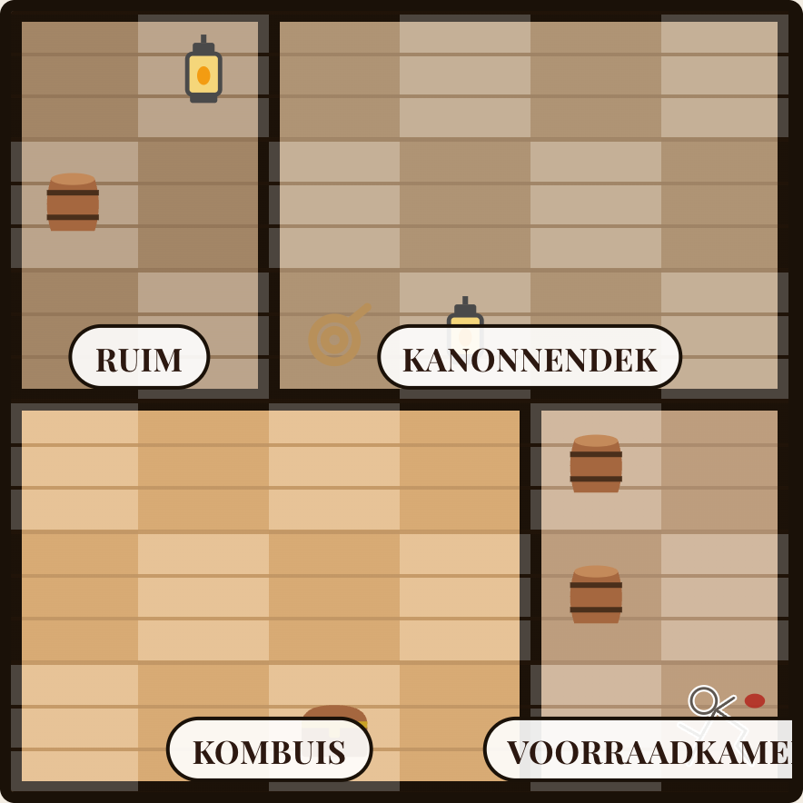

Kun jij de dader
vinden in
15
seconden?
Tijd!
Wie is de moordenaar?
Zet je antwoord in de reacties.
Morgen volgt het juiste antwoord.
Crimson Ledger
Elke dag een nieuwe zaak
GRATIS IN DE APP STORE
15